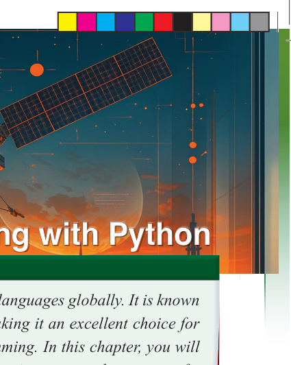
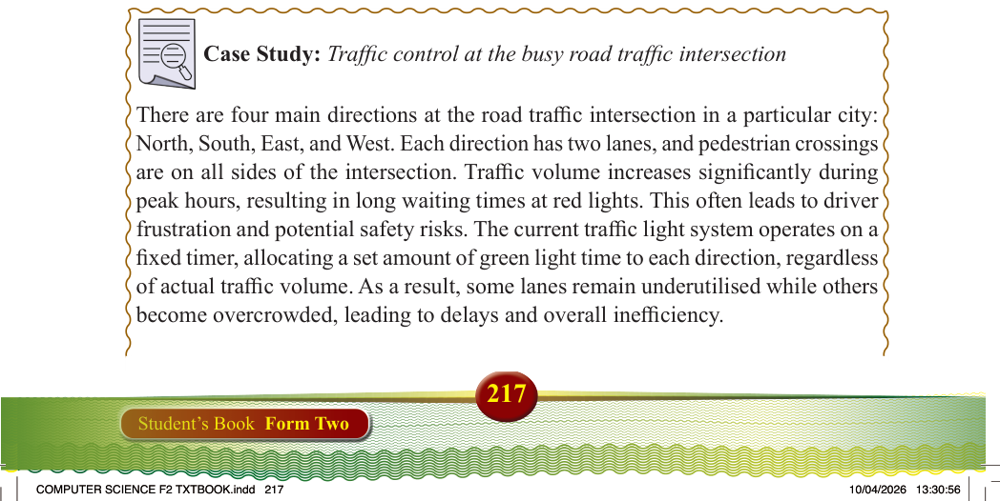
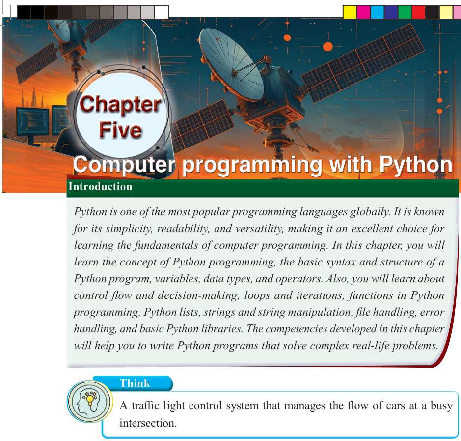

217
Student’s Book Form Two


Chapter
Five
Computer programming with
Computer programming with Python
Python
The concept of Python programming
Think
A traffic light control system that manages the flow of cars at a busy intersection.
Introduction
Python is one of the most popular programming languages globally. It is known for its simplicity, readability, and versatility, making it an excellent choice for learning the fundamentals of computer programming. In this chapter, you will learn the concept of Python programming, the basic syntax and structure of a
Python program, variables, data types, and operators. Also, you will learn about
control flow and decision-making, loops and iterations, functions in Python
programming, Python lists, strings and string manipulation, file handling, error
handling, and basic Python libraries. The competencies developed in this chapter
will help you to write Python programs that solve complex real-life problems.
Case Study: Traffic control at the busy road traffic intersection
There are four main directions at the road traffic intersection in a particular city:
North, South, East, and West. Each direction has two lanes, and pedestrian crossings
are on all sides of the intersection. Traffic volume increases significantly during peak hours, resulting in long waiting times at red lights. This often leads to driver frustration and potential safety risks. The current traffic light system operates on a
fixed timer, allocating a set amount of green light time to each direction, regardless
of actual traffic volume. As a result, some lanes remain underutilised while others become overcrowded, leading to delays and overall inefficiency.